Наши работы · отдельный объект
Яшкино
26 фотографий · Нажмите на снимок, чтобы рассмотреть детали.
 1 / 26
1 / 26

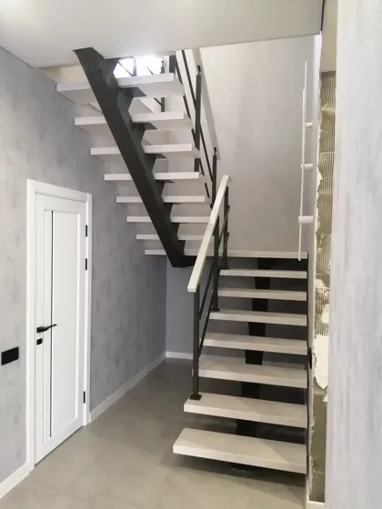
2 / 26
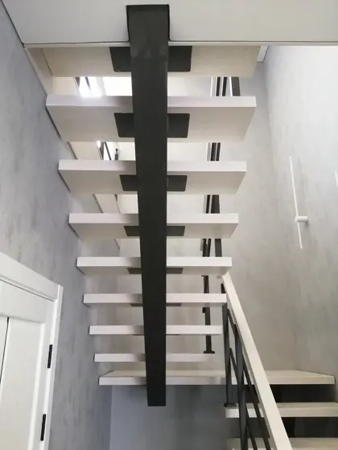
3 / 26
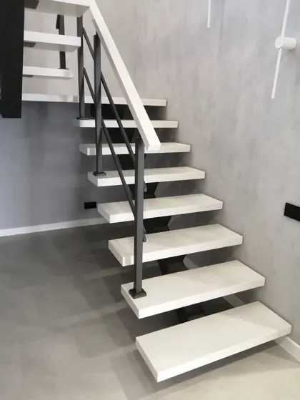
4 / 26
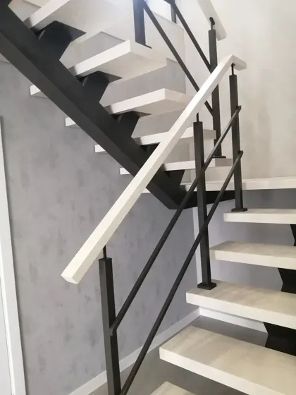
5 / 26
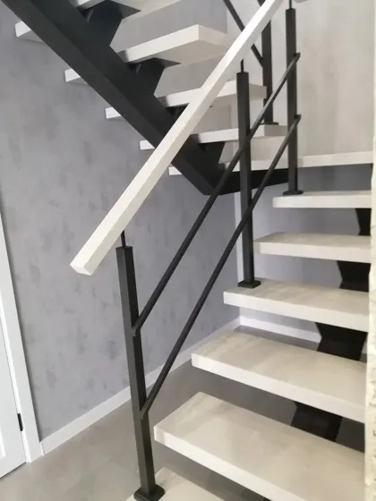
6 / 26
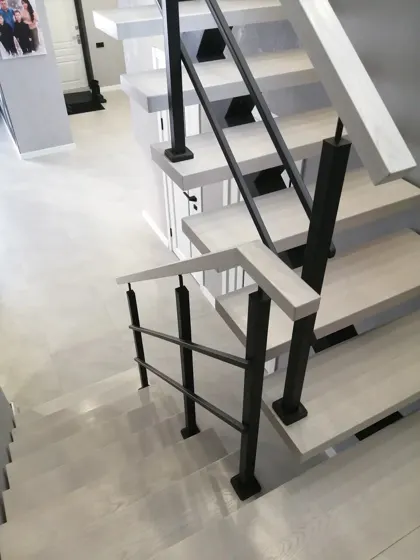
7 / 26
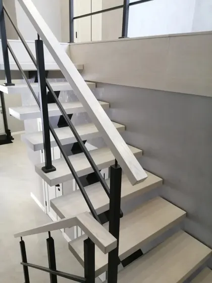
8 / 26
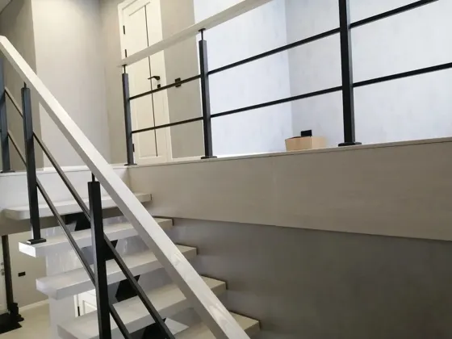
9 / 26
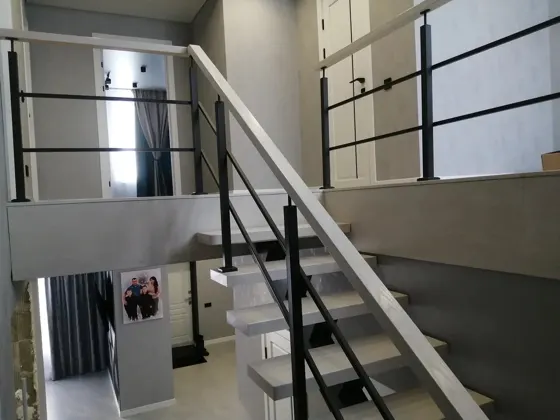
10 / 26
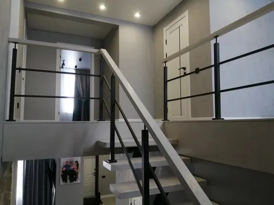
11 / 26
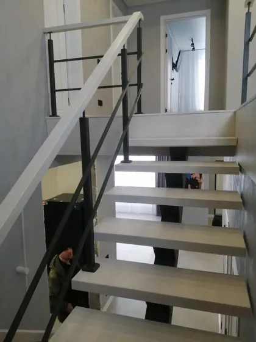
12 / 26
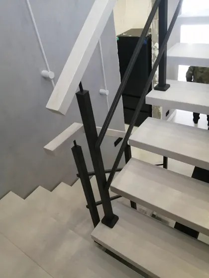
13 / 26
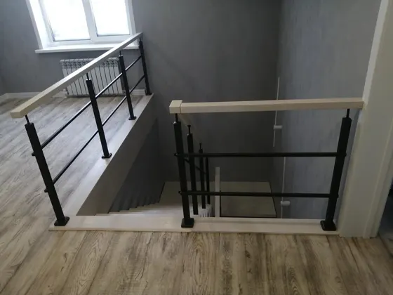
14 / 26
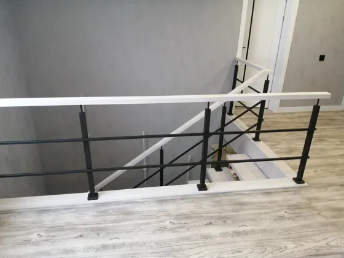
15 / 26
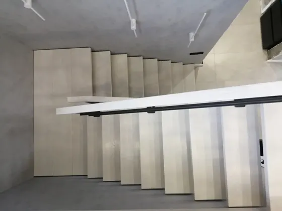
16 / 26
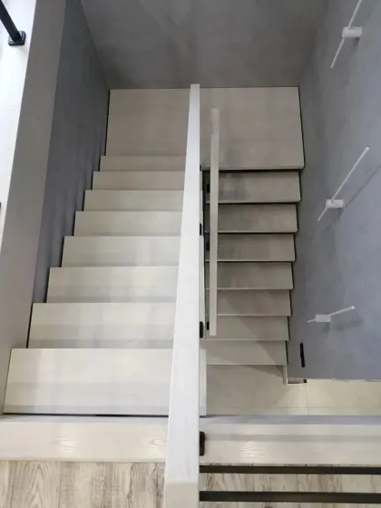
17 / 26
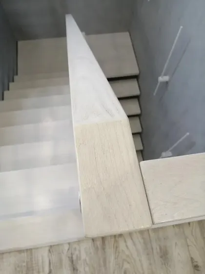
18 / 26
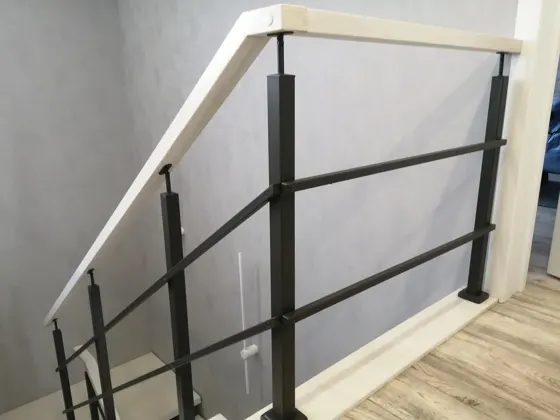
19 / 26
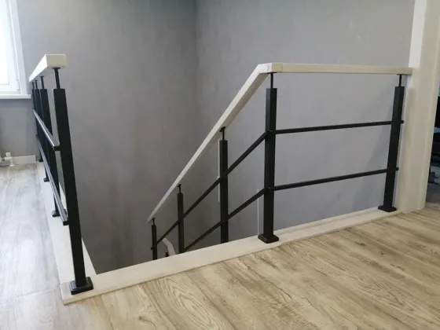
20 / 26
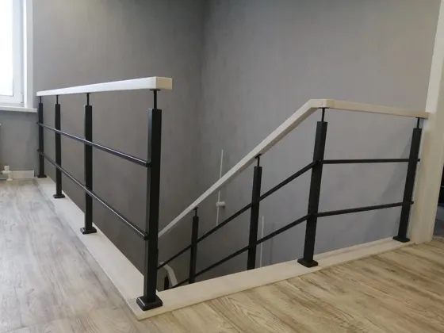
21 / 26
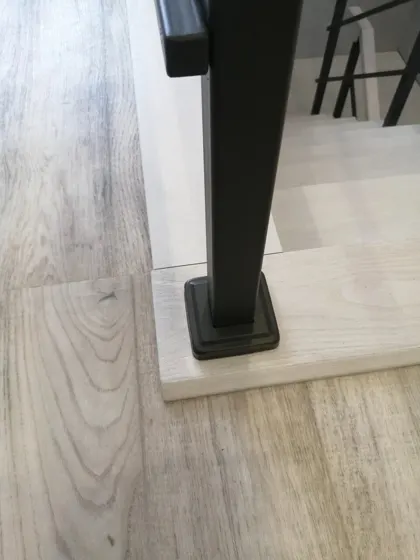
22 / 26
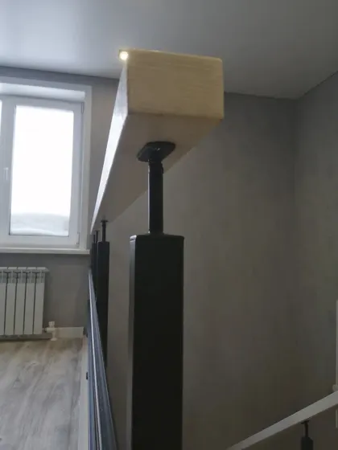
23 / 26
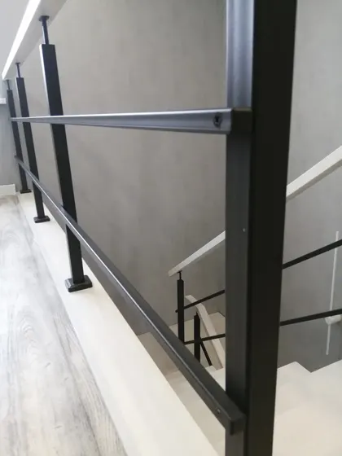
24 / 26
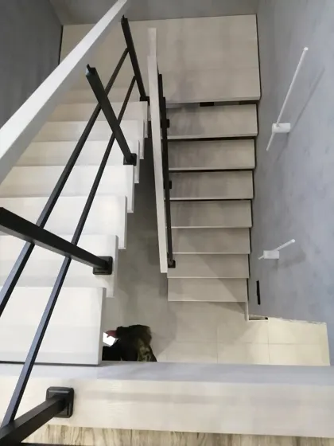
25 / 26
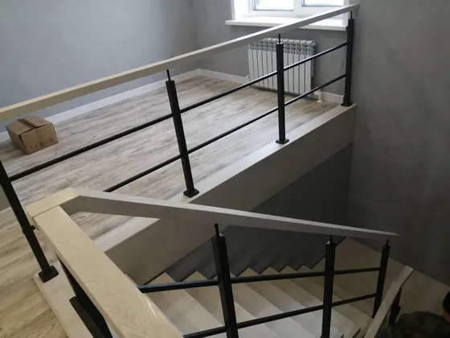
26 / 26